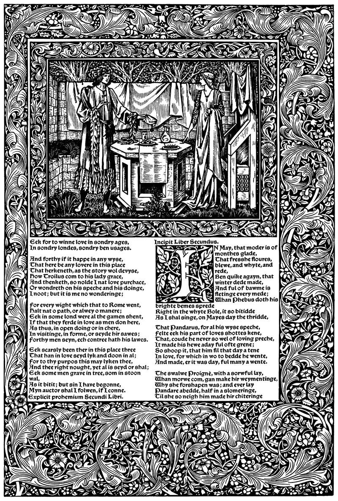

Type composition was about picking the right characters. Text formatting was about the visual appearance of those characters. Page layout is about the positioning and relationship of text and other elements on the page.
In fine printing, typographers usually get to choose the page size of their documents. But you don’t—most of the documents a lawyer creates will be on standard printer paper.
That’s no reason to tolerate mediocrity. English printer William Morris famously rebelled against mechanized, mass-produced typography—in the 1890s. He went on to produce a series of beautiful books intended to remind readers and writers what was possible on the printed page, in contrast to the coarse ritual of industrialized printing.
Today, the struggle continues. Word processors beckon us with default settings and templates that promise great results with no effort.
But you only get out what you put in. Don’t accept the defaults. You can do better.
- centered text
- justified text
- first-line indents
- space between paragraphs
- line spacing
- line length
- page margins
- watermarks
- body text
- hyphenation
- block quotations
- bulleted and numbered lists
- tables
- rules & borders
- widow and orphan control
- space above & below
- page break before
- keep lines together
- keep with next paragraph
- columns
- footnotes
- line numbers
- Bates numbering
- paragraph and character styles
- maxims of page layout